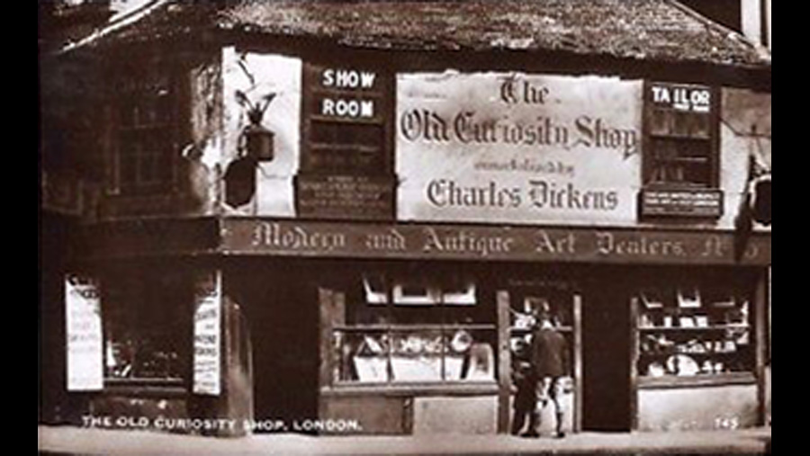

| Character | Actor |
|---|---|
| Little Nell | Mai Deacon |
| Grandfather Trent | Warwick Buckland |
| Quilp | E. Felton |
| Quilp's Wife | Alma Taylor |
| Sampson Brass | S. May |
| Dick Swiveller | Willie West |
| The Marchioness | Moya Nugent |
| The Single Gentleman | Jamie Darling |
| Tom Codlin | Billy Rex |
| Short | Bert Stowe |
| Mrs. Jarley | R. Phillips |
| Jerry | Sydney Locklynne |
| Role | Person |
|---|---|
| Director | Thomas Bentley |
| Screenplay | Thomas Bentley |
A 1914 British silent drama film directed by Thomas Bentley and starring Mai Deacon, Warwick Buckland and Alma Taylor, and was the first of three film adaptations of the story by Bentley. It was made by the Hepworth Company, the leading British film studio before the First World War.